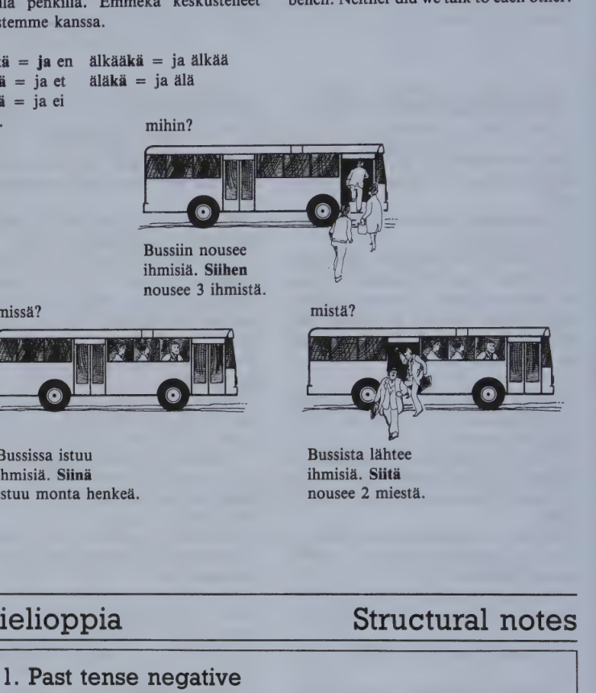

Kappale 30 / Lesson 30#
Katsokaa tanne ja hymyilkaa! / Look here and smile, please!#
Kalle ottaa perhekuvan / Kalle is taking the family picture
Suomi |
English |
|---|---|
1. Kalle. No niin, nyt se alkaa! Tulkaa kaikki tanne, mina otan sen kuvan nyt. Ottakaa pari tuolia mukaan. Ei, isoisa, ala sina kanna tuolia itse! Olli, tuo tuoli isoisalle. Pane se tahan. Isoisa, ole hyva ja istu siihen. Sinulla on syntymapaiva, sinun taytyy istua keskella. Isa ja aiti, istukaa isoisan vasemmalle ja oikealle puolelle. |
1. K. Well, here we go. Come here everybody, I’ll take the picture now. Take a couple of chairs along. No, Grandpa, don’t you carry the chair yourself! Olli, bring a chair for Grandpa. Put it right here. Grandpa, please sit down there. It’s your birthday, you must sit in the middle. Dad and Mom, please sit down to the left and right of Grandpa. |
2. Jaana. Sano missa minun paikkani on? Mina voisin seisoa tassa aidin vieressa, nain. Tai istua aidin ja isoisan valissa. Kumpi on parempi? |
2. J. Tell me where my place is? I could stand here, next to Mom, like this. Or I could sit between Mom and Grandpa. Which is better? |
3. K. Odota nyt vahan, Jaana, ala hairitse taas! Sina olet ihan mahdoton. Sinun vuorosi tulee kylla. |
3. K. Wait a bit now, Jaana, don’t disturb us again! You’re quite impossible. You’ll have your turn all right. |
4. J. Enhan mina hairitse yhtaan! Mina halusin vain auttaa. |
4. J. I’m not disturbing you at all! I just wanted to help. |
5. K. No, auta sitten, mene hakemaan Musti kuvaan. Tati ja seta, voisitteko te seisoa tuolla aidin ja isoisan takana? Ei, alkaa seisoko niin keskella, menkaa vahan enemman vasemmalle. Hetkinen … alkaa olko liian kaukana aidista, olkaa ihan hanen lahellaan. Noin, nyt on hyva. Ja Olli, seiso sina isan luona. |
5. K. Well, then help, go and fetch Musti for the picture. Aunt and Uncle, could you stand over there, behind Mom and Grandpa? No, don’t stand so much in the middle, go a little more to the left. One moment … don’t stay too far away from Mom, stay quite near her. Like that, now it’s good. And Olli, stand by Dad, please. |
6. Jaana (tulee Mustin kanssa). Tassa Musti on. Se nukkui kaikessa rauhassa sohvan alla. Hei Musti, ala juokse pois, Kalle ottaa meista kuvan. |
6. J. (comes with Musti). Here’s Musti. He was sleeping very peacefully under the sofa. Why, Musti, don’t run away, Kalle is going to take a picture of us. |
7. Aiti. Jaana ja Musti, alkaa juosko siina ja hairitko. Istukaa ja olkaa hiljaa, jos mahdollista. |
7. Mom. Jaana and Musti, don’t run around, don’t be a nuisance. Sit down and be quiet, if that’s possible. |
8. J. Hiljaa, Musti! |
8. J. Quiet, Musti! |
9. Olli. Hae sille makkaraa keittiosta, se auttaa. |
9. Olli. Go and get some sausage for him from the kitchen, that’ll help. |
10. Martta-tati. Kalle, laheta sitten meillekin tama kuva, kun se on valmis. |
10. Aunt Martta. Kalle, send us this picture, too, won’t you, when it’s ready? |
11. K. Tietysti mina lahetan. No niin, ovatko kaikki valmiit? Katsokaa tanne ja hymyilkaa! Hymyilkaa oikein kauniisti! Kiitos. |
11. K. Of course I will. Well, is everybody ready? Look here and smile, please! A really good smile! Thank you. |
tassa tuossa siina
tasta tuosta siita
tahan tuohon siihen
Kielioppia / Structural notes#
1. Imperative (affirmative and negative)#
a) Imperative sing. (= informal imperative)#
Affirmative |
English |
Negative |
English |
|---|---|---|---|
Tule tanne, Mikko! |
Come here, Mikko! |
Ala tule tanne! |
Don’t come here! |
Kerro hanelle! |
Tell her! |
Ala kerro hanelle! |
Don’t tell her! |
Tee se heti! |
Do it at once! |
Ala tee sita! |
Don’t do it! |
The affirmative imperative sing. was introduced in 5:2. The negative form uses the same stem, obtained from the 1st pers. present tense (tule/n, kerro/n, tee/n). The negation is ala.
The informal imperative is also used in orders or advice meant for everyone personally: varo! look out (for danger)! kaanna! turn (the page), over; katso (abbr. ks.) s. 170 see p. 170 etc.
b) Imperative pl. (and formal)#
Affirmative |
English |
Negative |
English |
|---|---|---|---|
Tul/kaa tanne, lapset! |
Come here, children! |
Al/kaa tul/ko tanne! |
Don’t come here! |
Kerto/kaa hanelle! |
Tell her! |
Al/kaa ker/to/ko hanelle! |
Don’t tell her! |
Teh/kaa se heti, nti Aho! |
Do it at once, Miss Aho! |
Al/kaa teh/ko sita! |
Don’t do it! |
The affirmative imperative pl. was introduced in 7:2. The negative form uses the same stem, obtained from the basic form of the verb (tul/la, kerto/a, teh/da).
Structure of the negative form:
negation + inf. stem / ko (ko)
al/kaa tul/ko
haluta and merkita verbs have -t before the imperative pl. ending:
Finnish |
English |
Finnish |
English |
|---|---|---|---|
leva/ta |
to rest |
Levat/kaa vahan! |
Rest a little! |
hairi/ta |
to disturb |
Al/kaa hairit/ko! |
Do not disturb! |
c) Direct object in imperative sentences#
Finnish |
English |
Finnish |
English |
|---|---|---|---|
Teen taman tyon. |
I’ll do this job. |
(En tee sita.) |
|
Tee/tehkaa tama tyo! |
Do this job! |
(Ala tee/alkaa tehko sita!) |
With the affirmative imperative, the direct object is in the basic form instead of the genitive.
However, a partitive object remains in the partitive: Syo/syokaa jaateloa! Have some icecream!
2. Postpositions with genitive#
Finnish |
English |
|---|---|
Paivallise/n jalkeen. |
After dinner. |
Rouva Salo/n kanssa. |
With Mrs. Salo. |
Tamperee/n kautta. |
Via Tampere. |
Asun Salon perhe/en luona. |
I live with the Salos (at the Salo’s). |
The English language has a large number of prepositions (literally, “words placed before another word”, e.g. “after”, “with”). The Finnish language also has a few, but it has far more postpositions (“words placed after another word”), e.g. jalkeen, kanssa.
The noun that precedes a postposition is most often in the genitive (sometimes in the partitive, see lesson 37:2).
Among postpositions with the genitive are:
Finnish |
English |
Finnish |
English |
|---|---|---|---|
aikana |
during |
poikki |
across |
alla |
under |
paalla |
on top of |
alapuolella |
below, underneath |
sisalla (sisassa) |
in, inside |
edessa |
in front of |
sisapuolella |
inside |
jalkeen |
after |
takana |
behind |
kanssa |
(together) with |
ulkopuolella |
outside |
kautta |
through, via |
vieressa |
by, next to |
keskella |
in the middle of |
valilla (valissa) |
between |
luona |
at, by, near |
yli(itse) |
over, across |
lahella |
near, close to |
ylapuolella |
above |
ohi(tse) |
past, by |
ymparilla |
around |
Some of these postpositions may be used as prepositions as well, e.g. ohi, poikki, yli: kadu/n poikki = poikki kadu/n across the street etc.
When a postposition with the gen. is preceded by a pers. pronoun, a possessive suffix must be used:
Finnish |
English |
Finnish |
English |
|---|---|---|---|
(minun) kanssa/ni |
with me |
(meidan) kanssa/mme |
with us |
(sinun) kanssa/si |
with you |
(teidan) kanssa/nne |
with you |
hanen kanssa/an (kanssa/nsa) |
with him/her |
heidan kanssa/an (kanssa/nsa) |
with them |
(About postpositions with the gen. see also 35:2.)
Sanasto / Vocabulary#
Finnish |
English |
|---|---|
+alka/a alan alkoi |
to begin, start, commence |
enemman (cp. paljon) |
more |
+hake/a haen haki |
to fetch; to look for; to apply for |
hiljaa |
quiet(ly), softly; slowly |
hiljai/nen-sta-sen-sia |
quiet, silent |
hymyil/la hymyilen hymyili |
to smile |
ihan (= aivan) |
quite, entirely, completely |
juos/ta juoksen juoksi |
to run |
+kanta/a kannan kantoi |
to carry, bear |
+kumpi? kumpaa? kumman? kumpia? |
which (of the two)? |
mahdolli/nen-sta-sen-sia |
possible, eventual |
+mahdoton-ta mahdottoman mahdottomia |
impossible |
mukaan |
along; with; according to |
rauha-a-n (rauhoja) (# sota) |
peace |
tietysti (= totta kai) |
of course, naturally |
valmis-ta valmiin valmiita |
ready; finished, complete |
Kappale 31 / Lesson 31#
Kun bussi ei tullut / When the bus did not come#
Suomi |
English |
|---|---|
Olen ulkomaalainen, asun Helsingissa. Saanko kertoa, mita minulle eilen tapahtui? |
I am a foreigner living in Helsinki. May I tell you what happened to me yesterday? |
Seisoin bussipysakilla. Odotin ja odotin. Bussi ei tullut. |
I was standing at a bus stop. I waited and waited. The bus did not come. |
En ollut yksin. Pysakilla seisoi myos vanha herra, jota en tuntenut. En tiennyt, paljonko kello oli, koska minulla ei ollut kelloa. Lopulta en voinut enaa odottaa. Paatin kysya vanhalta herralta, paljonko kello oli. |
I was not alone. There was also an old gentleman, whom I did not know, standing at the stop. I did not know what the time was because I had no watch. Finally I could not wait any longer. I decided to ask the old gentleman what the time was. |
Han ei vastannut. Joko han ei kuullut tai ei ymmartanyt, tai ehka han vain ei halunnut vastata. |
He did not answer. Either he did not hear or did not understand, or perhaps he just did not want to answer. |
Toistin kysymykseni hyvin selvasti ja kovaa. Talla kertaa herra katsoi minuun ja hymyili kohteliaasti, mutta ei sanonut mitaan. |
I repeated my question very distinctly and loudly. This time the gentleman looked at me and smiled politely but didn’t say anything. |
Miksi en huomannut sita ennen? Ehka han oli suomenruotsalainen, joka ei osannut suomea. Toistin kysymykseni ruotsiksi. Ei auttanut. Kohtelias hymy, mutta ei vastausta. |
Why didn’t I notice it before? Perhaps he was a Swedish-speaking Finn, who did not speak Finnish. I repeated my question in Swedish. It didn’t help. A polite smile, but no answer. |
“Tik tak”, sanoin. “Mita? Tik tak.” Mitaan ei tapahtunut. En kestanyt enaa. Huusin - englanniksi - jotain, jota en halua tassa toistaa. |
“Tick-tock”, I said. “Mita? Tick-tock.” Nothing happened. I couldn’t stand it any longer. I shouted - in English - something that I don’t want to repeat here. |
Herra katsoi minuun taas. Han ei enaa hymyillyt. Han sanoi vihaisesti: “Tyypillinen amerikkalainen nuori-mies!” Englanniksi. Erittain brittilaisesti. |
The gentleman looked at me again. He wasn’t smiling any longer. He said, angrily: “A typical young American!” In English. In a very British way. |
Bussi tuli. Me kaksi anglosaksia nousimme siihen. Mutta emme istuneet samalle penkille. Emmeka keskustelleet toistemme kanssa. |
The bus came. We two Anglo-Saxons got on. But we did not sit on the same bench. Neither did we talk to each other. |
enka = ja en alkaaka = ja alkaa
etka = ja et alaka = ja ala
eika = ja ei jne.

Kielioppia / Structural notes#
1. Past tense negative#
|
|
||
|---|---|---|---|
(mina) en |
sano/nut |
(mina) en |
nah/nyt |
(sina) et |
sano/nut |
(sina) et |
nah/nyt |
han ei |
sano/nut |
han ei |
nah/nyt |
(me) emme |
sano/neet |
(me) emme |
nah/neet |
(te) ette |
sano/neet |
(te) ette |
nah/neet |
he eivat |
sano/neet |
he eivat |
nah/neet |
Negative question:
Finnish |
English |
|---|---|
enko (mina) sano/nut? |
did I not say? |
emmeko (me) nah/neet? |
did we not see? |
Structure:
Past participle: inf. stem + -nut (-nyt) (sing.), -neet (pl.)
Negation |
Past participle |
|---|---|
en, et, ei |
sano/nut, nah/nyt |
emme, ette, eivat |
sano/neet, nah/neet |
tulla verbs have -ll-, -rr-, -ss- in the past participle:
Finnish |
Past participle |
|---|---|
tul/la to come |
tul/lut, tul/leet |
sur/ra to mourn |
sur/rut, sur/reet |
nous/ta to rise |
nous/sut, nous/seet |
haluta and merkita verbs have an extra -n- in the participle:
Finnish |
Past participle |
|---|---|
halu/ta to want |
halun/nut, halun/neet |
merki/ta to mean |
merkin/nyt, merkin/neet |
Note: tieta/a has two past participles, tieda/nyt and tien/nyt, the latter being more commonly used.
Note also: When te is used in formal speech to refer to one person, the past participle must appear in the sing. form:
Finnish |
English |
|---|---|
(te) ette nah/nyt |
you (one person) did not see |
(te) ette nah/neet |
you (many persons) did not see |
2. Relative pronoun joka#
Finnish |
English |
|---|---|
Tytto, joka tulee tuolla, on serkkuni. |
The girl who (that) is coming there is my cousin. |
Poika, jo/n/ka nimi oli Martti, soitti sinulle. |
A boy whose name was Martti called you. |
Kirja, jo/sta pidan, on Hyryn Alakoulu. |
A book which (that) I like is Hyry’s “Alakoulu”. |
Tytot, jo/t/ka tulevat tuolla, ovat serkkujania. |
The girls who (that) are coming there are my cousins. |
Kuvat, joi/ta katselitte, ovat Lapista. |
The pictures you were looking at are from Lapland. |
The relative pronoun in Finnish is joka (in English “who”, “which”, “that”).
The pronoun joka agrees in number with the noun to which it refers: tytto, joka tulee - tytot, jotka tulevat; kuva, jota katson - kuvat, joita katson. Its form depends on its function in the sentence.
joka has a regular declension except that the second syllable -ka disappears in all cases but three (basic form sing. and pl. and gen. sing.): joka, jo/n/ka, jo/ta, jo/ssa, jo/sta, jo/hon, jo/lla, jo/lta, jo/lle, pl. jo/t/ka, joi/ta. (About the complete declension see chart on p. 224.)
mika is also used as a relative pronoun, mainly in three ways:
Use |
Finnish |
English |
|---|---|---|
to refer to superlatives |
Tama on paras puku, mi/n/ka omistan. |
This is the best suit that I possess. |
to refer to an entire sentence |
Virtaset saivat lapsen, mika oli hauskaa. |
The Virtanens got a baby, which was nice. |
comparison |
(cp. Virtaset saivat lapsen, joka oli poika.) |
The Virtanens got a child that was a boy. |
especially in speech, frequently to replace |
Kaupunki, mi/ssa asumme, on pieni. |
The town in which (where) we live is small. |
Note: joka “every” is an indeclinable indefinite pronoun: joka maa/ssa in every country etc.
Sanasto / Vocabulary#
Finnish |
English |
|---|---|
anglo/saksi-a-n-sakseja |
Anglo-Saxon |
ennen |
before, earlier |
erittain |
very, extremely |
huoma/ta-an-si huomannut |
to note, notice, become aware |
+huuta/a huudan huusi huutanut |
to shout, cry |
hymy-a-n-ja (cp. hymyilla) |
smile |
joko … tai (cp. ei … eika) |
either … or |
kohteli/as-ta-an-aita (# epa/kohtelias) |
polite |
kovaa (# hiljaa) |
loudly; fast, at high speed |
-ka (added to negation): en/ka, et/ka, ei/ka, emme/ka, ette/ka, eivat/ka |
and not, neither, nor |
lopulta (= lopuksi) |
at last, in the end, finally |
+penkki-a penkin penkkeja |
bench |
+paatta/a paatan paatti paattanyt |
to decide, make up one’s mind |
+tapahtu/a (tapahdun) tapahtui tapahtunut |
to take place, occur, happen |
toistemme kanssa (toistemme k., toistensa k.) |
with each other |
tyypilli/nen-sta-sen-sia |
typical |
*
Finnish |
English |
|---|---|
+henki henkea hengen henkia (cp. henkilo) |
spirit, soul, mind; life; person (only when telling how many people) |